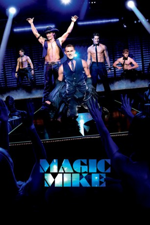
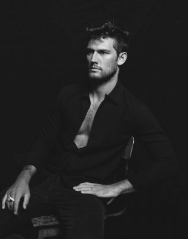
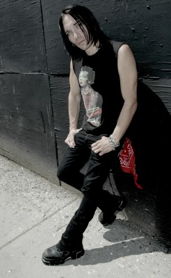

#2067 Magic Mike
 
 IMDB-Wertung: 6.1 / 10
IMDB-Wertung: 6.1 / 10  Metascore: 72
Metascore: 72 
Wenn die Sonne untergeht, geht die Party im Xquisite, dem Stripclub von Dallas, erst richtig los. Der ehemalige Tänzer hat sich mit dem Club einen Traum erfüllt und Xquisite zu einer exqusiten Anlaufstelle für Nachtschwärmer aufgebaut. Sein bestes Pferd im Stall ist Magic Mike, der eigentlich Mike Martingano heißt und den Club mit seinem Waschbrettbauch regelmäßig zum Beben bringt. Heimlich träumt Mike, der nebenbei als Dachdecker arbeitet, jedoch davon, sich als Handwerker selbständig zu machen. Eines Tages lernt er auf einer Baustelle The Kid kennen, einen rastlosen Jungen, der nichts mit sich anzufangen weiß und bei seiner älteren Schwester Paige lebt. Mike nimmt The Kid unter seine Fittiche und führt ihn in die Welt des Strippens, des exklusiven Partymachens und des schnellen Geldes ein. Doch diese Welt hat auch ihre Schattenseiten...
Jahr: 2012
Dauer: 110 Minuten
FSK: 12
Land: USA Studio: Warner Bros.Tonspuren: DTS - ,
Untertitel: Deutsch,
Auflösung: 1080p (1920x800) Größe: 6266 MB
Genre: Komödie, Drama
Regisseur:  Steven Soderbergh
Steven Soderbergh
Drehbuch: Reid Carolin
Soundtrack:
Darsteller:
 Matthew McConaughey als Dallas
Matthew McConaughey als Dallas Channing Tatum als Magic Mike
Channing Tatum als Magic Mike Olivia Munn als Joanna
Olivia Munn als Joanna-  Alex Pettyfer als Adam
 James Martin Kelly als Sal
James Martin Kelly als Sal- Cody Horn als Brooke
- Reid Carolin als Paul
- Avery Camp als Girl in Line
- Micaela Johnson als Portia
- Denise Vasi als Ruby
- Camryn Grimes als Birthday Girl
- Kate Easton als Liz
 Joe Manganiello als Big Dick Richie
Joe Manganiello als Big Dick Richie- Matt Bomer als Ken
 Adam Rodriguez als Tito
Adam Rodriguez als Tito Kevin Nash als Tarzan
Kevin Nash als Tarzan Gabriel Iglesias als Tobias
Gabriel Iglesias als Tobias- Vanessa Ryan als Cowboy Lap Dance Girl
- Teresa Espinosa als Pony Girl
- Betsy Brandt als Banker
- Monica Garcia als Dr. Love Girl
- Annette Houlihan Verdolino als Tarzan's Girl
- Candace Marie als Boxing Girl
 Mircea Monroe als Ken's Wife
Mircea Monroe als Ken's Wife- Riley Keough als Nora
- Caitlin Gerard als Kim
- Yari De Leon als Sorority Girl
- Cameron Banfield als Kim's Boyfriend
- Michael Roark als Ryan
- Marland Burke als Thug #2
- Ashley Hayes als Raver Girl
- Ken Anthony II als Street Pedestrian , uncredited
- Cassandra M. Bellantoni als Sexy Cougar , uncredited
- Elizabeth Brissenden als Go-Go Dancer , uncredited
- Emma Chandler als Sorority Girl , uncredited
- Michelle Clunie als Dallas' Girl , uncredited
- Fielding Edlow als Club Girl , uncredited
- Frenchi Firecracker als Club Goer , uncredited
 Lubella Gauna als Club goer , uncredited
Lubella Gauna als Club goer , uncredited- Rod Grant als Strip Club Patron , uncredited
-  Eric Ian als Eric , uncredited
- Stacy Jordan als Waitress , uncredited
- Charlotte Wilson Langley als Club Goer / Pedestrian , uncredited
- Carrie Lauren als Beach Girl , uncredited
- Melissa LeEllen als Sarah , uncredited
- Morgan Lester als Sorority Girl , uncredited
- Krystle McMullan als Female Club Goer , uncredited
- Adrienne McQueen als Dallas' Flirt , uncredited
- Deana Molle' als Strip Club Patron #1 , uncredited
 Jeremy Palko als Beach Guy , uncredited
Jeremy Palko als Beach Guy , uncredited
Datei: X:\2-Dilogie(G-M)\Magic Mike\Magic Mike (2012, FSK12, 1920x800).mkv seit 29.09.2015
Festplatte: HD Collection-2(A-Z)-3(A-M)
 Alle Filme aus Gruppe '2-Dilogie(G-M)\Magic Mike'
Alle Filme aus Gruppe '2-Dilogie(G-M)\Magic Mike'